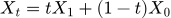
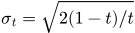
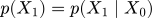

TL;DR
Q-learning with Adjoint Matching (QAM) applies Adjoint Matching to policy optimization in Q-learning.
Compared to prior flow RL methods, QAM directly leverages the
Background: What is Adjoint Matching?
Adjoint Matching (Domingo-Enrich et al., 2025) is a recently proposed technique in the generative modeling literature that fine-tunes a flow-matching model to maximize a reward function Q under a standard KL regularization/constraint. Normally, generating/sampling a sample from a flow model involves sampling a noise and then solve an ordinary differential equation (ODE) via numerical integration. One may also convert this ODE into an SDE that admits the same path marginals subject to any noise schedule (σ), using the score function:
Since the optimal velocity field and the score has a simple relationship (e.g., see Eq. 4.79 in the flow-matching tutorial), we can simplify the ODE to SDE conversion further. Here, we assume the flow velocity field reconstructs the flow defined by :
Under a memoryless noise schedule (e.g., ), the conversion can be further simplified into
![\mathrm{d}X_t = f(X_t, t) \mathrm{d}t \quad \Leftrightarrow_d \quad \mathrm{d}X_t = \left[2f(X_t, t) - X_t/t\right] + \sigma_t \mathrm{d} B_t](equations/ode-sde-v3.svg)
The memoryless schedule ensures the noise is independent from the output from the SDE: . This allows Domingo-Enrich et al., 2025 to use the following stochastic optimal control objective to any flow model against a reward function.
At the optimum, fine-tuned velocity field generates the optimal KL-constrained distribution (an expoential tilt of the base flow model):
Direct optimization of the SOC objective above requires backpropagation through time (BPTT). The process can be equivalently represented as an ODE of the adjoint state (the gradient of the loss function with respect to the noisy sample) in continuous time from t=1 to t=0.
Notice how the ODE depends on the fine-tuned velocity field. This means that any ill-conditioness in the fine-tuned flow model may blow up the ODE and making the optimization unstable. Adjoint matching takes a step further by observing that many terms in the adjoint state does not have effect on the optimal solution. This allows us to construct a "lean" adjoint state instead:
Now, the adjoint state ODE has no dependency on the fine-tuned velocity field. Instead, it only depends on the base velocity field. This means that the ill-conditioness in the fine-tuned flow model should not blow up adjoint state ODE, making the optimization more stable. The "lean" adjoint state has the same boundary condition (at t=1) as the original adjoint state. With this "lean" adjoint state, we can complete the adjoint matching objective as follows:
This is it! While we hope this provides a minimal summary for adjoint matching for our work, the original paper contains more detail and provides a more general framework.
Q-learning with Adjoint Matching
Expressive policies have been gaining popularity recently in RL (especially in offline RL) as they excel in capturing multimodal distribution in prior data and synergize well with action chunking (e.g., QC and DQC). A natural policy optimization objective is to find a policy that maximizes some value function (e.g., Q function) while staying close to the behavior distribution in the prior data:
This objective has a closed-form solution of
Finding this optimal behavior-constrained policy is non-trivial and there has been many diffusion/flow RL methods
proposed in recent years to tackle this. However, these methods often have their own failure modes. For example,
many existing methods akin to classifier/classifier-free
guidance approach which combines the score/velocity field of the base policy and the gradient of the value function additively during sampling. While this serves as
a reasonable approximation, it does not guarantee the action samples to recover the action distribution of the optimal behavior-constrained policy.
Some uses weighted behavior cloning (e.g., FAWAC from here) where its optimum coincides
with the optimal behavior-constrained policy, but such approach has been found to be practically ineffective as it
does not leverage the first-order information (i.e., action gradient) of the value function.
Other non-ideal characteristics include the need for backpropagation through time (through the diffusion/flow)
and distillation (e.g., FQL) which can sacrifice the policy expressivity.
In our work, we leverage adjoint matching, which exactly solves the same KL-constrained optimization problem, and more importantly
avoids all the aforementioned non-ideal characteristics in prior methods (see below).
The result of it is QAM, a Q-learning algorithm that brings the advantages of prior methods together. It uses the action gradient from the value function directly to fine-tune a flow policy towards the optimal behavior-constrained policy without using unstable backpropagation through time or sacrificing policy expressivity. In practice, QAM can be summarized in just a few lines of pseudocode, largely following the fine-tuning procedure in the original adjoint matching paper (but adapted to policy optimization).
In practice, we also find that it is often beneficial (especially for online fine-tuning) to relax the KL constraint such that the fine-tuned policy can output actions that are close "geometrically" close to the behavior actions in the prior data but have low probability under the behavior distribution. We experimented with two variants. The first variant trains a FQL policy on top of QAM's fine-tuned policy. The second variant trains a residual policy (the edit policy from EXPO) to refine the action samples from QAM's fine-tuned policy. These two variants are called QAM-F and QAM-E respectively. As we will show in the next section, these two variants can further improve upon QAM and the QAM-E variant exhibits strong online fine-tuning performance.
Results
We evaluated QAM on OGBench, a popular offline RL benchmark with a diverse set of tasks ranging from locomotion to manipulation. All three variants of QAM exhibit strong offline performance across the board except on some locomotion tasks (each number reports the aggregated performance of 5 tasks in each domain).
We also find the QAM-E variant is well-suited for online fine-tuning. On some of the hardest domains from the benchmark, our method exhibits strong sample-efficiency and robustness across the board (each plot reports the aggregated performance of 5 tasks in each domain).
That is all for now! We have released our code (
BibTeX
@article{li2026qam,
author = {Qiyang Li and Sergey Levine},
title = {Q-learning with Adjoint Matching},
conference = {arXiv Pre-print},
year = {2026},
url = {http://arxiv.org/abs/2601.14234},
}